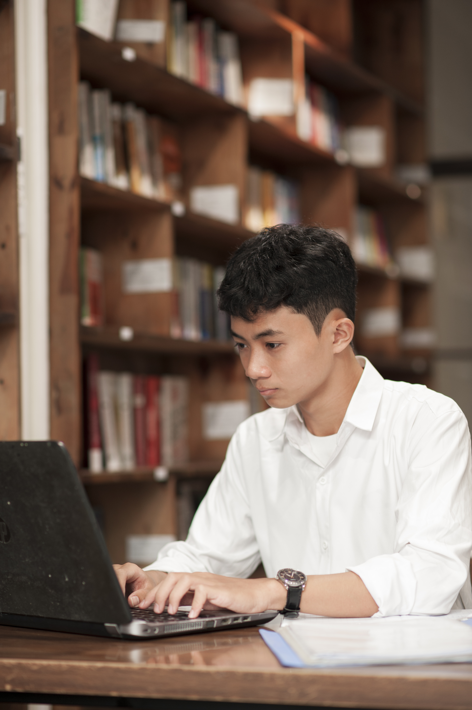
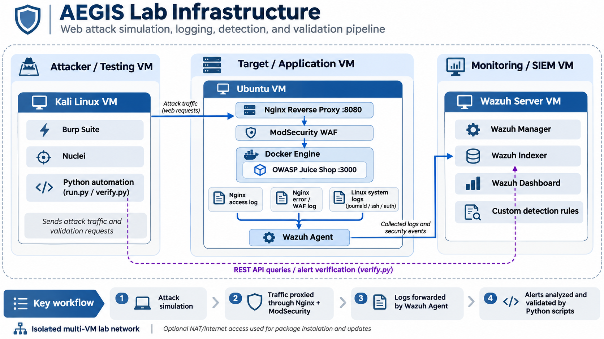

COMPUTER SCIENCE / CYBERSECURITY
Understand systems.
Find the gaps.
Build better defenses.
I'm Khang Vo, an ASU Computer Science student
focused on analyzing logs and building security tools.
⌖ Tempe, Arizona

Learning by doing.Security · Code · Curiosity[ ↗ ]01 / THE PERSON BEHIND THE WORK
APPLICATION SECURITY+DETECTION ENGINEERING+SECURITY AUTOMATION
01 / SELECTED WORK
Less theory.
More building.
Real projects. Hands-on learning.
FEATURED / SECURITY LAB
Aegis.
Simulate attacks. Collect logs. Validate detections.
WazuhDetection & monitoring
PythonTest automation
NginxProxy & logging
DockerApplication isolation
AEGIS / PROJECT WALKTHROUGHOpen video ↗
An isolated homelab connecting web attack testing with Wazuh monitoring and Python-based validation.
15+control scenarios
>90%test-outcome agreement
2detection blind spots found

Attack simulation → log collection → detection → validation.
 ↗
↗02 / ROBOTICS
Led a team to build a robot for ball retrieval, shooting, and flag capture.
ArduinoSolidWorksTeam leadership
View project ↗03 / MOBILE DEVELOPMENT
Practical mobile apps, including reading tools. Watch the Find Books demo above.
React NativeJava
02 / BACKGROUND
Curious by nature.
Hands-on by choice.
I'm a Computer Science student focused on cybersecurity. I learn by building systems, testing their limits, and understanding what the logs reveal.
Full background in my resume ↓2026 — 2029Arizona State University
B.S. Computer Science, Cybersecurity
2025 — 2026VNU-HCM University of Technology
Computer Science · Talented Engineer Program
03 / TOOLKIT
What I work with.
>_Languages
Python · C++ · Java · Bash
[+]Security
Burp Suite · Nuclei · Wazuh
Wireshark · GDB · pwntools · Binary Ninja
{/}Infrastructure
Linux · Windows · Docker · VMware
Nginx · TCP/IP · HTTP · DNS
⌘Development
Git · React Native
Arduino · SolidWorks
04 / BEYOND THE CODE
A few milestones.
HANDS-ON SECURITY TRAINING
pwn.college Orange Belt
Web security, cryptography, and binary exploitation — learned through practical CTF challenges.
Dec 2025 – Oct 2026View achievement ↗ ↗
↗
Top 20University CTF
Pwn & Reverse Engineering
National Top 20Imagine Cup Junior
Led a team of 5 on an AI heritage project.
FinalistCompetitive Programming
Central Vietnam competition
15+ studentsMathematics Tutor
Over 90% scored 8.5/10 or higher.